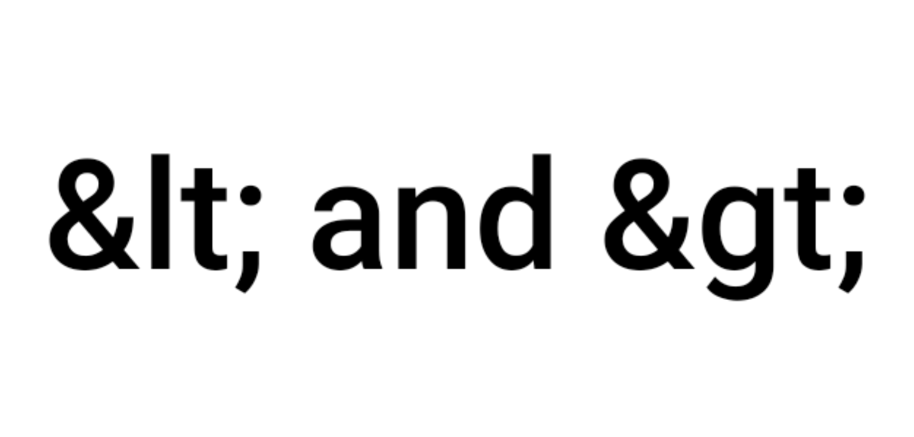
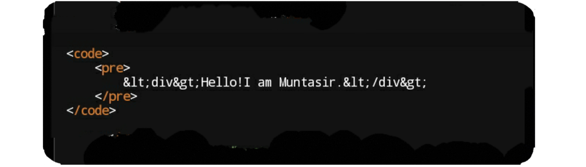
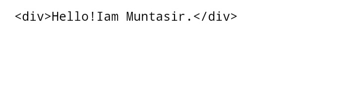
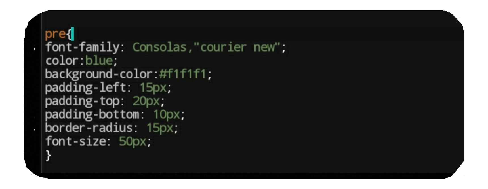
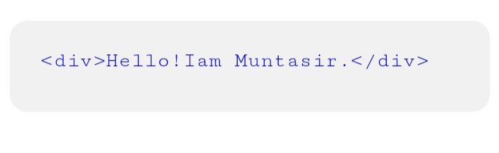

Sometimes you have to display various programs on your website which can be Python, HTML, JavaScript or any other programming language. But if you just type the code in HTML, the code in the output will be displayed in one line.In some languages, especially in Python, the difference between the lines or the indent program plays a special role in activation of the program.For this we need some special tags that can identify the lines separately. For this, three tag play a special role. These are explained in sequence below.
CODE TAG(<code></code>)
The most basic one for displaying code is the code tag. The font-family and font-size of all the text included in the code tag is changed so that the text can be understood as a program even if it is a little bit. But the problem here is that some CSS styles including margin-left, margin-top margin-bottom, margin-right and padding do not work here.it can't break the lines separately of the text included in it.
PRE TAG(<pre></pre>)
Python language is very important for every line and indent included in the line so if any Python code is included in the code tag then the whole code will be displayed in one line. Then our work is not complete. For this you have to use pre tag. The pre tag can identify all text and indents included separately. This is the work of pre tag. What? Have you got it?

Python code was successfully displayed. But the problem was made to display the HTML code. Do not you still understand what the problem is ? I explain. The tags have played a key role in HTML. It is not possible to do anything on the website without these tags. In a word, these tags are the life of HTML. If you write tags, then it must be a included in a less than and a greater than mark . If you now type a HTML tag inside the code tag and pre tag, then the IDE will not display the tag. Did not understand? You will understand if I give you an example. Suppose you are programming any HTML file. You can use div tags in different places inside the body tag in your HTML file. Then the IDE will display according to the tags.Is the div tag displaying? Of course not. If this is done just inside the PRE tag, the divbtag will not be displayed as well. This is because every tag has a less than symbol and any text and finally typed a greater than mark, then HTML IDE is understands it as a tag. For this, we have to remove less than and greater than marks. Then less than tag and the greater than mark will not be displayed.So two special marks are used in HTML to display the less than and the greater than Mark. A short "And"(&) and after that "lt;" is used to display less than mark and on the other hand a short "And"(&) and after that "gt;" is used to display greater than mark. But be cautious! Plus mark can not be used at all. I gave the plus sign here because if I typed & with lt; in my IDE, it was displayed as less than sign(<) to you. Did not understand? If you did not understand then read it again.
CODE:

OUTPUT

ADDING SOME STYLES
The code is displayed but it is not stylish. So now we will add some styles. As I said before, several styles do not process with code tags. So if you want to make the displayed code stylish, then we have to delete the code tag here. But if the code tag is omitted, the font-family and font-size of the included text will be the default. Then it became a problem. No, nothing really mattered, I was just kidding. We can make it stylish by adding several styles including font-family, font-size with pre tag. For this, all the styles that need to be added are mentioned below.
CODE

OUTPUT

বাংলায়
কখনো কখনো আপনাকে আপনার ওয়েবসাইটে বিভিন্ন প্রোগ্রাম প্রদর্শন করতে হয় যা হতে পারে পাইথন, এইচটিএমএল,জাভাস্ক্রিপ্ট কিংবা অন্য কোন প্রোগ্রামিং ল্যাংগুয়েজের। কিন্তু এইচটিএমএল এ কেবল কোডটি টাইপ করে দিলে আউটপুট এ কোডটি কোডটি এক লাইনে ডিসপ্লে করা হবে। কোন কোন ল্যাঙ্গুয়েজে বিশেষ করে পাইথনে বিভিন্ন লাইনের পার্থক্য বা ইন্ডেন্ট প্রোগ্রামটি সক্রিয়তায় বিশেষ ভূমিকা রাখে। এজন্য প্রয়োজনে কিছু বিশেষ ট্যাগ যা লাইন গুলো কে আলাদাভাবে চিহ্নিত করতে পারবে। এজন্য তিনটি এক বিশেষ ভূমিকা পালন করে।এগুলো নিজে ধারাবাহিকভাবে ব্যাখ্যা করা হলো।
CODE TAG(<code></code>)
কোড প্রদর্শনের জন্য সবচেয়ে প্রাথমিক একটি হচ্ছে কোড ট্যাগ। কোড ট্যাগ এর অন্তর্ভুক্ত সকল টেক্সটের font-family এবং font-size চেঞ্জ হয়ে যায় যার ফলে টেক্সটি কিছুটা হলেও প্রোগ্রাম বলে বোঝা যায়। কিন্তু এখানে সমস্যা হল margin-left ,margin-top margin-bottom,margin-right এবং padding সহ বেশকিছু সিএসএস স্টাইল এখানে কাজ করে না। এই ট্যাগ এর আরো একটি বড় সমস্যা হল যে এর অন্তর্ভুক্ত সকল টেস্ট টেক্সটের লাইনগুলো আলাদাভাবে চিহ্নিত এবং ডিসপ্লে ও করতে পারে না।
PRE TAG(<pre></pre>)
পাইথন ল্যাঙ্গুয়েজ তো প্রত্যেকটা লাইন এবং লাইনে অন্তর্ভুক্ত ইনডেন্ট খুবই গুরুত্বপূর্ণ তাহলে যদি কোন পাইথন কোড কে কোড ট্যাগ এর অন্তর্ভুক্ত করা হয় তাহলে তো সম্পূর্ণ কোডটি এক লাইনের ডিসপ্লে করা হবে। তাহলে তো আমাদের কাজ সম্পূর্ণ হলো না। এজন্য pre ট্যাগের ব্যবহার করতে হবে। pre ট্যাগটি অন্তর্ভুক্ত সকল টেক্সট এবং ইনডেন্ট সমূহকে আলাদাভাবে চিহ্নিত করতে পারে। এটাই হলো pre ট্যাগ এর কাজ।কি? বোঝা গেল কি?
পাইথন কোড তো সফলভাবে প্রদর্শন করা হলো।কিন্তু এইচটিএমএল কোড ডিসপ্লে করতে গিয়ে তো সমস্যা হয়ে গেল।কী সমস্যা আপনি এখনো বুঝতে পারলেন না? আমি বুঝিয়ে দিচ্ছি।দেখুন এইচটিএমএল এ মুখ্য ভূমিকা পালন করে হলো ট্যাগ সমূহ। এই ট্যাগসমূহ ছাড়া ওয়েবসাইটের কিছুই করা সম্ভব না। এক কথায় এই ট্যাগ গুলো হল এইচটিএমএল এর প্রাণ।কোন ট্যাগ লিখতে গেলে তো অবশ্যই একটা লেস দেন এবং গ্রেটারদেন চিহ্ন এর প্রয়োজন হয়। তাহলে এখন যদি আপনি code ট্যাগ এবং pre ট্যাগ এর ভিতরে কোন এইচটিএমএল ট্যাগ টাইপ করেন এই উদ্দেশ্যে যে আপনি ট্যাগটি ডিসপ্লে করবেন, তাহলে IDE সেই ট্যাগ টি কে ট্যাগ হিসেবে গণ্য করবে। আর তাই IDE সেই ট্যাগ টিকে ডিসপ্লে করবে না। বুঝতে পারলেন না? একটা উদাহরণ দিচ্ছি তাহলে বুঝতে পারবেন। ধরুন আপনি কোন এইচটিএমএল ফাইল প্রোগ্রাম করছেন। আপনি আপনার এইচটিএমএল ফাইল এ body ট্যাগ এর ভিতরে নানা জায়গায় div ট্যাগ ব্যবহার করতেই পারেন। তখন IDE সেই ট্যাগ টির কাজ অনুযায়ী প্রক্রিয়া করবে। কিন্তু div ট্যাগটি কি ডিসপ্লে করা হচ্ছে? অবশ্যই না। ঠিক এমনটিই যদি pre ট্যাগ এর ভেতরে করা হয় তাহলেও div ট্যাগটি ডিসপ্লে করা হবে না। এর কারণ লেজদেন চিহ্ন এর পর কোন টেক্সট এবং অবশেষে একটি গ্রেটারদেন চিহ্ন টাইপ করা হলেই এইচটিএমএল IDE টি সেটিকে কোড হিসেবে গণ্য করে।এজন্য আমাদেরকে লেজদেন এবং গ্রেটারদেন চিহ্ন টি কে সরাতে হবে। তাহলেতো লেস দেন এবং গেটারদেন চিহ্ন টি ডিসপ্লে করা হবে না।তাই এইচটিএমএল এ লেজ দেন এবং গ্রেটারদেন চিহ্ন ডিসপ্লে করার জন্য দুটি বিশেষ চিহ্ন ব্যবহার করা হয়। লেজদেন চিহ্নের জন্য ব্যবহার করা হয় সংক্ষিপ্ত ইংরেজি এন্ড (&) এর সাথে lt; অর্থাৎ & + lt; এবং গ্রেটারদেন চিহ্ন এর জন্য সংক্ষিপ্ত ইংরেজি এন্ড (&) এর সাথে gt; অর্থাৎ & + gt;। তবে সাবধান প্লাস চিহ্ন টি কিন্তু মোটেই ব্যবহার করা যাবে না। আমি এখানে প্লাস সাইন টি দিয়েছি এর কারণ আমার IDE তে সংক্ষিপ্ত এন্ড(&) এর সাথে lt; টাইপ করলে আপনাদের কাছে সেটা লেজ দ্যানের চিহ্ন হিসেবে ডিসপ্লে করা হতো। কি?বোঝা গেল?না বোঝা গেলে আরেক বার পড়ুন?
কোড:
আউটপুট:
কিছু স্টাইল যোগ করা
কোড প্রদর্শন করা হলো কিন্তু এটা স্টাইলিশ হলো না।এজন্য এখন আমরা কিছু স্টাইল যোগ করব। আগেই বলেছি কোড ট্যাগ এর সাথে বেশ কয়েকটা স্টাইলই প্রক্রিয়া করে না। এজন্য যদি ডিসপ্লে করা কোড টি কে স্টাইলিশ বানাতে হয় তাহলে আমাদের কোড ট্যাগ টি কে এখানে বাদ দিতে হবে। কিন্তু কোড ট্যাগ টি বাদ দিলে তো এর অন্তর্ভুক্ত টেক্সটির font-family এবং font-size ডিফল্ট হয়ে যাবে। তাহলে তো সমস্যা হয়ে গেল। না আসলে কিছুই সমস্যা হয়নি, আমি মজা করছিলাম। আমরা pre ট্যাগ এর সাথে font-family, font-size সহ বেশ কিছু স্টাইল যুক্ত করার মাধ্যমে এটিকে স্টাইলিশ বানাতে পারব। এজন্য যা যা স্টাইল যুক্ত করতে হবে তা নিচের করে উল্লেখ করা হলো।
কোড
আউটপুট